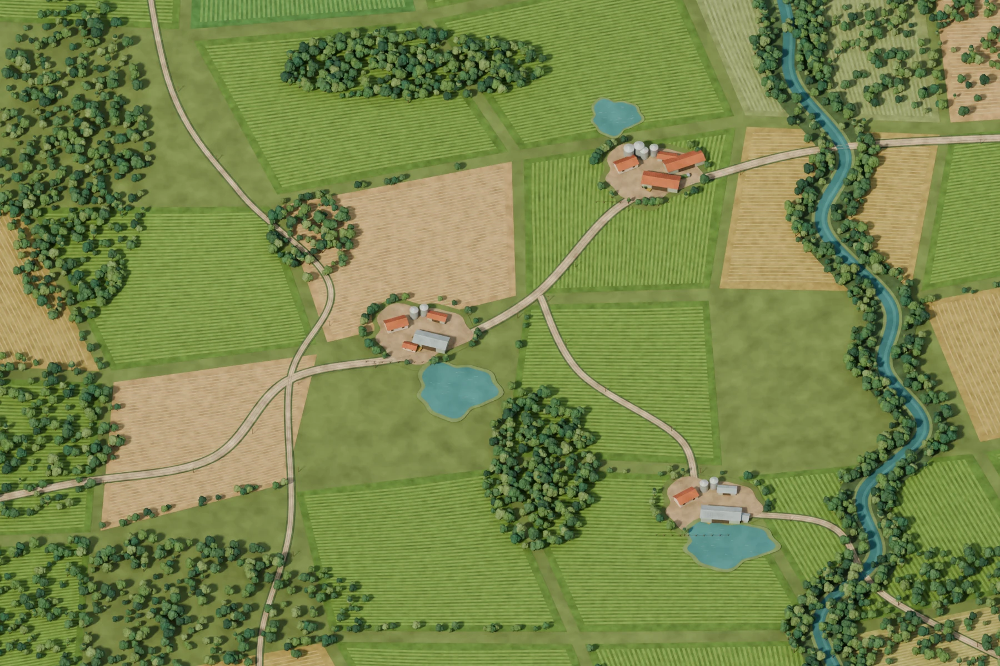

Farmeiro
Cascavel, Paraná
Primeira safra
Entre na fazenda
Sua safra fica salva neste navegador. Para levá-la a outro aparelho, exporte uma cópia no menu Partida.
Continuar safra
Cascavel, Paraná
Sua safra fica salva neste navegador. Para levá-la a outro aparelho, exporte uma cópia no menu Partida.
Continuar safra